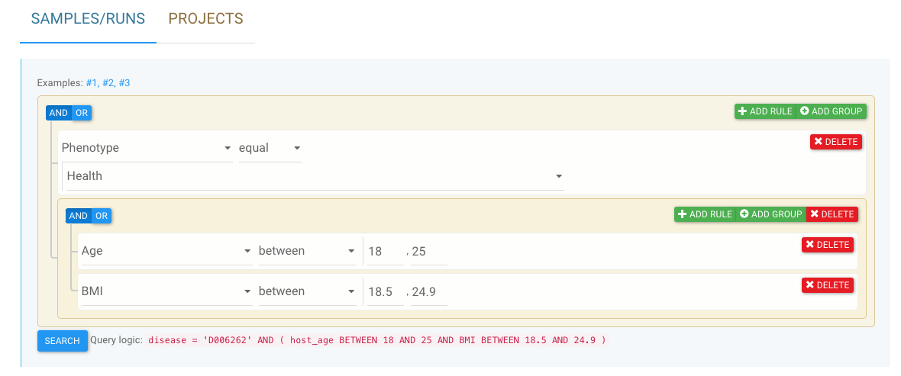

Welcome to GMrepo¶
GMrepo is a curated database of human gut metagenomes. Please choose a topic on the left navigation panel to continue.
Citation¶
Please cite us if you find this resource useful:
What's new¶
Nov 25, 2020¶
Added new pages:
- curated projects ,
- phenotype comparisons , and
- marker taxa .
Aims and features of GMrepo¶
Capture the full dynamics of human gut microbes¶
With GMrepo, we aim to capture the full dynamics of the microbes living in the human gut, including their
- abundances and prevalence,
- associations with human health and diseases , and
- co-occurrences,
all of which can be further stratified by using manually curated meta-data:
- population (country),
- gender,
- age,
- body mass index, and
- many other available meta data.
Emphasize on data quality and re-usability¶
With GMrepo, we emphasize on data quality and re-usability (i.e., availability of the host meta-data). We thus:
- manually extracted and curated relevant meta-data (most of the time with difficulties) from public databases and related publications;
- consistently re-annotated all data using state-of-the-art methods (see the Materials and methods page for details);
- applied vigorous quality control (QC) methods and stringent criteria to the data, in order to include only high quality data, but nonetheless kept the meta-data of the samples and runs in our database.
Make relevant information easier to find¶
In order to further facilitate users to find data of interests, we equipped GMrepo with
a graphical query builder (data selector) to help users to create complex and flexible queries with a few clicks. So far the data selector allows users to filter samples and runs by related technical meta data such as experiment type (16S or Metagenomics), number of sequenced reads, and host- related meta data, including related phenotype (disease or health), age, sex, and BMI (body mass index). More filters will be added in the future.
For example, the screenshot below allows users to search for samples (runs) that:
- were taken from healthy individuals with BMI (body mass index) over 25,
AND - were sequenced by either 16S
ORmetagenomics.

See Use the graphic data selector for details and more examples.